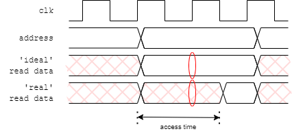

This may be a bit non-standard but can clarify reading waveforms.
In a simulation there is no need for time to pass for causality.
In the ‘real world’ things take finite times to happen.
always @ (posedge clk)
begin
data_1 <= value
data_2 <= data_1;
end
The behavioural model above will work because:
But
Two timing effects are shown on the right-hand side of the figure:
Both of these are governed by electrical effects in the final circuit implementation which are unknown at this time. Futhermore, in a digital simulation, states switch instantaneously so there can be no direct representation of edge speed.
However it is possible to represent delays within the circuit artificially. This can improve legibility of a waveform file by delaying register changes until after the clock edge.
At its simplest:
always @ (posedge clk)
always @ (posedge clk)
begin
begin
#2
data_1 <= value;
data_1 <= #2 value;
data_2 <= data_1;
data_2 <= #2 data_1;
end
end
This can make the values on the buses at the clock edge clearer. A delay which is a ‘small fraction’ of the clock cycle probably gives the clearest result.
The left hand code/figure is a bit risky in
that the delay occurs before the inputs are sampled. It
relies on all the delays – including all corresponding
modules – using the same delay.
The right hand code/figure is a bit longer
but is typically ‘safer’. The inputs are sampled
at the clock edge and the output change is scheduled in the
future.
Delays are not synthesizable; they will be ignored when the circuit is built although the synthesizer may produce warnings to this effect.
Delays can also be used in combinatorial blocks if an estimate of the performance of an assembly is available.
Another use for delays is in providing a more realistic simulation environment. This has been done in the laboratory when the framestore RAM is modelled. There is a delay in providing read data based on the manufacturer's (worst case) figures and the RAM output is undefined until that time. This time is greater than a clock period. A naive model could provide data as soon as it was requested; this could then be used in the next clock cycle and everything would, apparently, work. However if this is attempted with the delay in place an undefined value will be propagated which should be detected further on in the simulation.
Unlike an unitialised flip-flop, this is a situation where the test code can actively use unknown values to help find problems.
always @ (data_valid)
begin
#1
if (data_valid)
fs_rdata <= {out_reg3, out_reg2, out_reg1, out_reg0};
else
fs_rdata <= 32'hxxxx;
end
One problem which can occur in a design – especially when trying to optimise-out clock cycles – is the accidental creation of a ‘combinatorial loop’. This is where logic signals form a cycle where one changes another and so on leading back to the first; the change propagates forever. This forms what is called a ‘ring oscillator’.
Ring oscillators can have (occasional) uses — although they are usually best avoided. In a real circuit there is a delay associated with each gate so it does, in fact, oscillate, typically at a high frequency. In simulation there is typically no delay specified so it oscillates at an infinitely high frequency. Thus, no (simulated) time passes and a simulation appears to (mysteriously) stall.
If you suspect this, the (temporary) insertion of a small delay in any of the signals will ususally reveal the problem.
Up to testing.
Back to debugging tests.
Forward to tasks for testing.